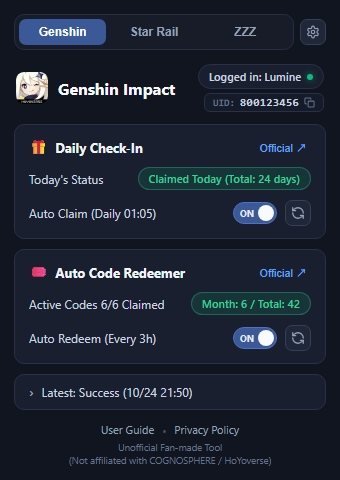

Log in to Official Websites
Log in normally to HoYoLAB or the official game websites in your Chrome browser.
Genshin Impact
Honkai: Star Rail
Zenless Zone Zero
Save time on HoYoLAB daily bonuses and copying and pasting redemption codes.
Just open your browser, and Primogems, Stellar Jades, and Polychromes will be automatically delivered directly to your in-game mailbox.

Setup takes just 1 minute. No passwords or registration required.
Log in normally to HoYoLAB or the official game websites in your Chrome browser.
Click the HoYoPass icon in your Chrome toolbar. On first run, a confirmation dialog appears: check the games you play and click "Agree and Get Started".
As long as the feature toggles are ON, rewards will be claimed automatically every day even if you don't open the extension popup. Claimed items will arrive in your in-game mailbox.
Switch between Genshin, Star Rail, and ZZZ in one tap. Hide unplayed titles from the settings gear (⚙) to safely exclude them from background checks.
Click your in-game UID displayed at the top to copy it instantly to your clipboard. Perfect for events and friend requests.
Automatically cycles through all enabled titles daily around 00:05 UTC+8 (automatically distributed within a 30-minute window and shown in your local timezone) or when you first turn on your PC. Tap "↻" for manual claim anytime.
Scans and redeems newly discovered gift codes every 3 hours. After special program livestreams, tap "↻" to redeem all latest codes immediately.
View active code progress (e.g. "Active Codes 6/6 Claimed") and total stats. Hover over monthly/total count to see the next scheduled check time.
Click the bottom summary bar to expand recent logs, allowing you to review daily check-ins and code redemption results anytime.
Yes, absolutely. Even if your PC is asleep or shut down during the night, HoYoPass will automatically detect pending check-in bonuses and new gift codes as soon as you wake your PC and open Chrome.
* The extension cannot run while your computer is completely powered off or while Chrome is closed.
On your first run, HoYoPass scans all currently active public gift codes. If you had previously redeemed some codes manually, the game server may send a standard notification mail stating that the code was already used.
This is standard behavior from the official game API and does not cause any harm to your account. Once verified, those codes are recorded locally and won't be re-submitted.
HoYoLAB occasionally triggers temporary anti-bot puzzle verifications. Click the notification or the "Official ↗" button in the Daily Check-In card to open the official check-in page and complete one check-in manually. Once verified, automatic claiming will resume normally.
No, passwords or login credentials are never requested or stored. HoYoPass communicates directly with official endpoints using your existing Chrome session cookies via secure browser transport. No cookies or personal credentials are ever sent to external third-party servers.
No. The "↻" button executes only for the currently selected game tab. However, the background automatic runs (daily check-in and 3-hour code checks) automatically cycle through all enabled games.
No. Within a single Chrome profile, HoYoPass uses the single HoYoverse account currently logged into that browser session and cannot automatically switch between different accounts per game. (If your games are linked to the same HoYoverse account, all enabled titles are processed together automatically.)
If you use separate accounts for each game, you can create separate Chrome profiles for each account, install HoYoPass in each profile, and toggle the enabled games from the settings gear (⚙) next to the game tabs.
To minimize server load and avoid burst requests, HoYoPass uses randomized request timing (jitter), exponential backoff, and checks the public code list every 3 hours—calling the official redemption APIs only when unclaimed codes are detected.
However, automating check-ins or code redemptions via third-party tools carries a non-zero risk of account restrictions depending on how HoYoverse interprets and enforces its Terms of Service. Please use this extension at your own discretion and risk.